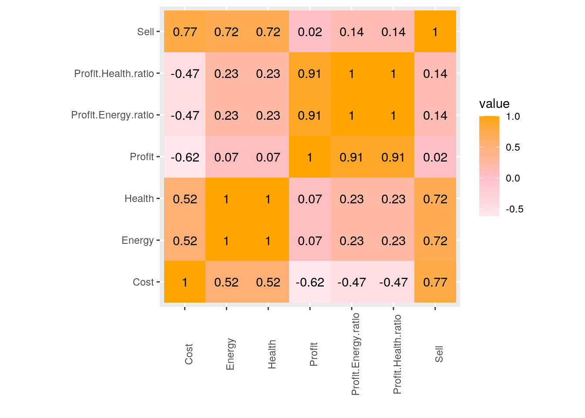
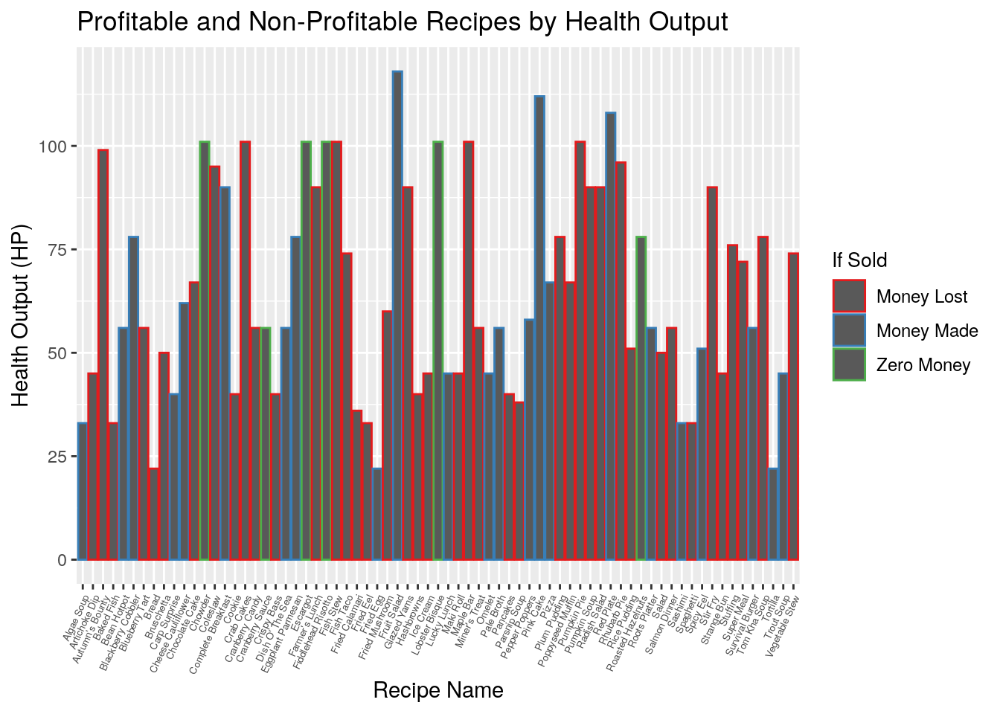
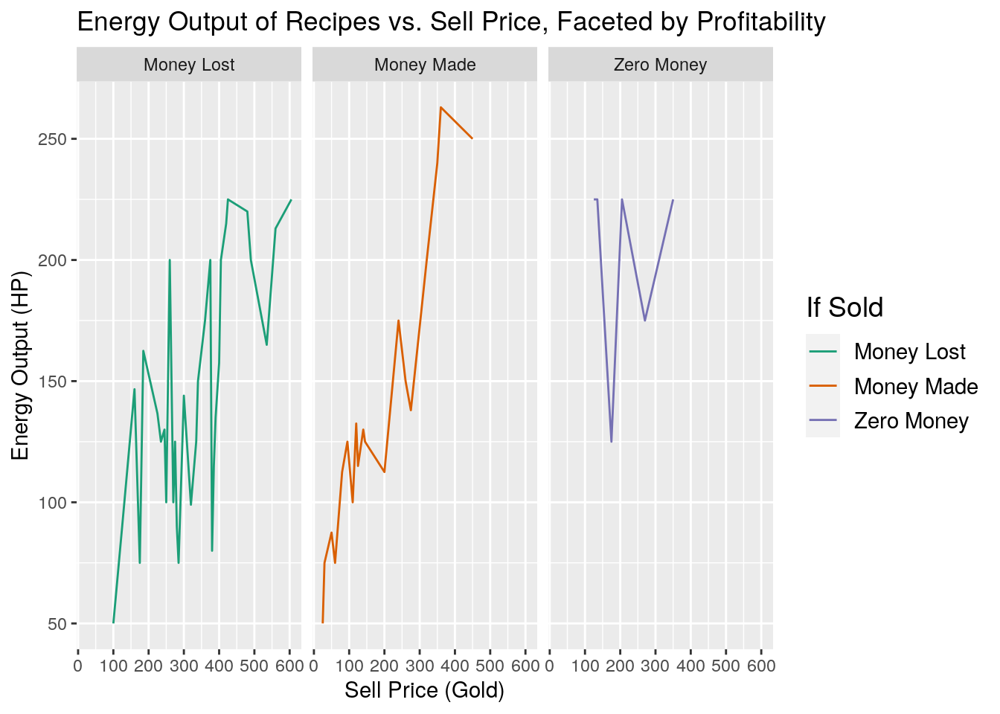
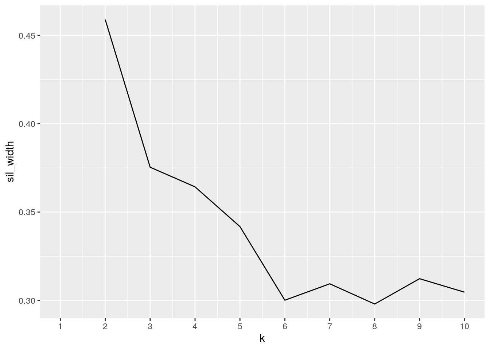
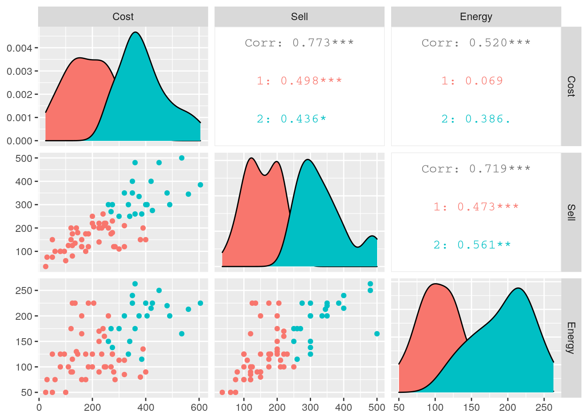
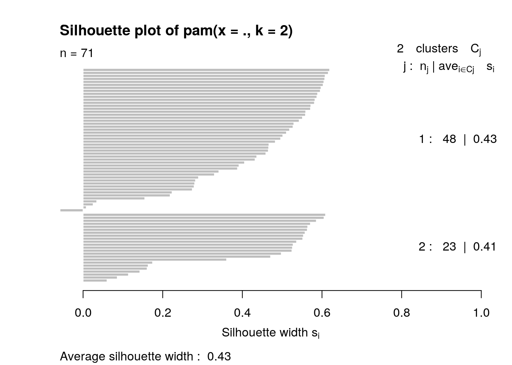

library(readxl)
library(readr)
library(tidyr)
library(tidyverse)
library(cluster)
library(GGally)
library(kableExtra)
recipeprofits <- read_xlsx("recipeprofits.xlsx")
recipestat <- read_xlsx("recipestat.xlsx")
glimpse(recipeprofits)## Rows: 71
## Columns: 16
## $ Item <chr> "Algae Soup", "Artichoke Dip", "Autumn's Bounty", "Bak…
## $ Q1 <dbl> 4, 1, 1, 1, 2, 2, 1, 1, 1, 4, 1, 1, 1, 1, 1, 1, 1, 1, …
## $ `Ingredient 1` <chr> "Green Algae", "Artichoke", "Yam", "Sunfish", "Green B…
## $ Q2 <dbl> NA, 1, 1, 1, NA, 1, 1, NA, 1, NA, 1, 1, 1, 1, 1, 1, 1,…
## $ `Ingredient 2` <chr> "Green Algae", "Milk", "Pumpkin", "Bream", "Green Bean…
## $ Q3 <dbl> NA, NA, NA, 1, NA, 1, 1, NA, 1, NA, NA, 1, NA, 1, 1, 1…
## $ `Ingredient 3` <chr> "Green Algae", NA, NA, "Wheat Flour", NA, "Wheat Flour…
## $ Q4 <dbl> NA, NA, NA, NA, NA, NA, 1, NA, NA, NA, NA, NA, NA, NA,…
## $ `Ingredient 4` <chr> "Green Algae", NA, NA, NA, NA, "Blackberry", "Egg", NA…
## $ C1 <dbl> 15, 160, 160, 30, 40, 20, 50, 100, 60, 30, 175, 100, 5…
## $ C2 <dbl> 15, 85, 320, 45, 40, 100, 100, 0, 200, 30, 100, 100, 8…
## $ C3 <dbl> 15, 0, 0, 100, 0, 100, 100, 0, 60, 30, 0, 25, 0, 100, …
## $ C4 <dbl> 15, 0, 0, 0, 0, 20, 25, 0, 0, 30, 0, 0, 0, 0, 80, 0, 2…
## $ Cost <dbl> 60, 245, 480, 175, 80, 240, 275, 100, 320, 120, 275, 2…
## $ Sell <dbl> 100, 210, 350, 100, 100, 260, 180, 60, 210, 150, 300, …
## $ Profit <dbl> 40, -35, -130, -75, 20, 20, -95, -40, -110, 30, 25, -2…glimpse(recipestat)## Rows: 71
## Columns: 10
## $ Name <chr> "Algae Soup", "Artichoke Dip", "Autumn's Bounty", "Bak…
## $ `Sell Price` <dbl> 100, 210, 350, 100, 100, 260, 150, 60, 210, 150, 300, …
## $ Ingredient <chr> "Green Algae (4)", "Artichoke", "Yam", "Sunfish", "Gre…
## $ `Ingredient 2` <chr> "-", "Milk", "Pumpkin", "Bream", "-", "Sugar", "Wheat …
## $ `Ingredient 3` <chr> "-", "-", "-", "Wheat Flour", "-", "Wheat Flour", "Sug…
## $ `Ingredient 4` <chr> "-", "-", "-", "-", "-", "-", "Egg", "-", "-", "-", "-…
## $ Energy <dbl> 75, 100, 220, 75, 125, 175, 125, 50, 113, 90, 138, 150…
## $ Health <dbl> 33, 45, 99, 33, 56, 78, 56, 22, 50, 40, 62, 67, 101, 9…
## $ `Stat Bonus` <chr> NA, NA, "Foraging+2, Defense+2", NA, "Max Energy+2", N…
## $ Source <chr> "Clint - Mail", "Cooking Channel", "Demetrius - Mail",…This summer, I've been obsessively playing a farming simulation game called Stardew Valley. I've gotten into the spirit of maximizing the benefit and profit I get from the items that I cultivate in the game! One of the features of the game is using ingredient items to cook recipes, which when consumed, increase my character's energy and health. I wondered which of the 71 recipes would be best for receiving these benefits while also not costing too much of the monetary value of the individual ingredients needed to make them. I also wanted to know if it would be better to sell a recipe or consume it. This is interesting to me because I will actually use this analysis to maximize my profit and benefit in the game! One dataset, recipestat, lists the energy and health amount given by each recipe when consumed, as well as how to obtain the recipe and stat bonuses it gives. The other dataset, recipeprofits, breaks down the costs of each ingredient in a recipe, sell price if I were to sell the cooked recipe, and if there is any profit made by selling the recipe instead of selling the raw ingredients alone. I acquired them through the Stardew subreddit, where lots of dedicated fans of the game upload spreadsheets as player guides associated with aspects of the game. I expect to see that the recipes that would give the most monetary profit would also have the best numerical health and energy values, since the game should balance profit with benefit when consumed.
# Cleaning Up the Datasets and Joining Them
recipeprofits <- recipeprofits %>% mutate(Q1 = NULL, Q2 = NULL,
Q3 = NULL, Q4 = NULL)
recipes <- inner_join(recipeprofits, recipestat, by = c(Item = "Name"))
recipes <- recipes %>% mutate(Ingredient = NULL, `Ingredient 2.y` = NULL,
`Ingredient 3.y` = NULL, `Ingredient 4.y` = NULL, `Sell Price` = NULL) %>%
rename(I1 = "Ingredient 1", I2 = "Ingredient 2.x", I3 = "Ingredient 3.x",
I4 = "Ingredient 4.x")I joined the datasets by the recipe IDs. I chose an inner_join because I only wanted to examine the recipes where there was both data for the monetary profit of the recipe, and data for the energy and health benefit of the recipe. I ended up with 71 observations, so no IDs were dropped by the join. This showed me that there was cooresponding data for every recipe ID between the two datasets. I also removed columns that I did not want in my datasets, and renamed some others.
# Adding Function Variables
recipes <- recipes %>% mutate(Profit.Energy.ratio = Profit/Energy,
Profit.Health.ratio = Profit/Health)
# Summary Statistics- Overall Data
summarystat <- recipes %>% select(Cost, Sell, Profit, Energy,
Health, Profit.Energy.ratio, Profit.Health.ratio) %>% summarize_if(is.numeric,
list(mean = mean, sd = sd, median = median, min = min, max = max),
na.rm = T)
summarystat <- summarystat %>% pivot_longer(cols = Cost_mean:Profit.Health.ratio_max) %>%
separate(name, into = c("variable", "stat"), sep = "_")
summarystat %>% pivot_wider(names_from = "stat", values_from = "value") %>%
arrange(desc(sd)) %>% kbl() %>% kable_paper("hover", full_width = F)| variable | mean | sd | median | min | max |
|---|---|---|---|---|---|
| Cost | 256.5492958 | 133.2709151 | 250.0000000 | 25.000000 | 605.000000 |
| Sell | 213.7323944 | 104.8663037 | 200.0000000 | 35.000000 | 500.000000 |
| Profit | -42.8169014 | 84.5861032 | -30.0000000 | -250.000000 | 120.000000 |
| Energy | 145.5633803 | 56.2643588 | 125.0000000 | 50.000000 | 263.000000 |
| Health | 65.1408451 | 25.3790103 | 56.0000000 | 22.000000 | 118.000000 |
| Profit.Health.ratio | -0.8102497 | 1.7184668 | -0.4444444 | -6.388889 | 1.785714 |
| Profit.Energy.ratio | -0.3612581 | 0.7654644 | -0.2000000 | -2.875000 | 0.800000 |
# Summary Statistics- Creating an `If Sold` Categorical
# Variable
recipes <- recipes %>% mutate(cg = case_when(Profit > 0 ~ "Money Made",
Profit == 0 ~ "Zero Money", Profit < 0 ~ "Money Lost")) %>%
rename(`If Sold` = "cg")
recipes %>% mutate(Cost = NULL, Sell = NULL) %>% group_by(`If Sold`) %>%
mutate(C1 = NULL, C2 = NULL, C3 = NULL, C4 = NULL) %>% summarize_if(is.numeric,
list(mean = mean, sd = sd, median = median, min = min, max = max),
na.rm = T) %>% pivot_longer(cols = Profit_mean:Profit.Health.ratio_max) %>%
separate(name, into = c("variable", "stat"), sep = "_") %>%
pivot_wider(names_from = "stat", values_from = "value") %>%
filter(`If Sold` == "Money Made" | `If Sold` == "Money Lost") %>%
kbl() %>% kable_paper("hover", full_width = F)| If Sold | variable | mean | sd | median | min | max |
|---|---|---|---|---|---|---|
| Money Lost | Profit | -94.2857143 | 70.4304832 | -80.0000000 | -250.0000000 | -5.0000000 |
| Money Lost | Energy | 143.6666667 | 53.1214286 | 130.0000000 | 50.0000000 | 225.0000000 |
| Money Lost | Health | 64.2857143 | 23.9758880 | 58.0000000 | 22.0000000 | 101.0000000 |
| Money Lost | Profit.Energy.ratio | -0.7846709 | 0.7203659 | -0.5811688 | -2.8750000 | -0.0294118 |
| Money Lost | Profit.Health.ratio | -1.7601391 | 1.6180141 | -1.2975913 | -6.3888889 | -0.0657895 |
| Money Made | Profit | 40.0000000 | 28.1634838 | 30.0000000 | 5.0000000 | 120.0000000 |
| Money Made | Energy | 134.8260870 | 58.9943388 | 125.0000000 | 50.0000000 | 263.0000000 |
| Money Made | Health | 60.3043478 | 26.5919242 | 56.0000000 | 22.0000000 | 118.0000000 |
| Money Made | Profit.Energy.ratio | 0.3176891 | 0.1935860 | 0.2666667 | 0.0400000 | 0.8000000 |
| Money Made | Profit.Health.ratio | 0.7129613 | 0.4360487 | 0.5970149 | 0.0892857 | 1.7857143 |
# Correlation Matrix
recipes %>% mutate(C1 = NULL, C2 = NULL, C3 = NULL, C4 = NULL) %>%
select_if(is.numeric) %>% cor %>% as.data.frame %>% rownames_to_column %>%
kbl() %>% kable_paper("hover", full_width = F)| rowname | Cost | Sell | Profit | Energy | Health | Profit.Energy.ratio | Profit.Health.ratio |
|---|---|---|---|---|---|---|---|
| Cost | 1.0000000 | 0.7728908 | -0.6173675 | 0.5201737 | 0.5195750 | -0.4735401 | -0.4722213 |
| Sell | 0.7728908 | 1.0000000 | 0.0220182 | 0.7187019 | 0.7185398 | 0.1356956 | 0.1365602 |
| Profit | -0.6173675 | 0.0220182 | 1.0000000 | 0.0714489 | 0.0721913 | 0.9143230 | 0.9133171 |
| Energy | 0.5201737 | 0.7187019 | 0.0714489 | 1.0000000 | 0.9999400 | 0.2300671 | 0.2310723 |
| Health | 0.5195750 | 0.7185398 | 0.0721913 | 0.9999400 | 1.0000000 | 0.2306740 | 0.2317151 |
| Profit.Energy.ratio | -0.4735401 | 0.1356956 | 0.9143230 | 0.2300671 | 0.2306740 | 1.0000000 | 0.9999647 |
| Profit.Health.ratio | -0.4722213 | 0.1365602 | 0.9133171 | 0.2310723 | 0.2317151 | 0.9999647 | 1.0000000 |
Firstly, I created two new function variables comparing profit in selling a recipe to the health or energy output if the recipe is consumed. In my first table, I wanted to lay out the general statistics (mean, standard deviation, median, min, and max) of my data, to understand how much variation there was between recipes for their Cost, Sell price, Profit, Energy, Health, and the two new ratio function variables. I found that recipes on average have -42.8 profit in gold, so overall, recipes in Stardew Valley are not profitable to sell. However, the minimum and maximum profit were extremely different and there was a high standard deviation, so recipes do vary a lot in their profitability. I also found that Energy has a lot higher standard deviation than Health does, which is interesting to note for choosing if its better to prioritize health or energy output when choosing from a selection of recipes.
In my second table, I compared the summary statistics of mean, standard deviation, median, min, and max of Profit, Energy, Health, and their ratio variables Profit.Energy.ratio and Profit.Health.ratio by if they would make money when sold. I made a new categorical variable to partition the recipes this way, separating the stats into money made and money lost. This table allows me to separate recipes to observe the average values by profitability more clearly. I found that where there is money to be made, the profit is only 40 gold on average, which is not a very large amount, but profit when money is lost is -94.3, so recipes generally are more detrimental money-wise when profit is lost than beneficial when money can be made.
Lastly, I created a correlation matrix to give me more statistical understanding of the relationships between my variables. These show that there is a correlation value of 1 between Energy and Health, so they are very interchangeable in the patterns of their values (i.e. recipes that have high energy have a high health associated), Cost and Sell price have a high correlation as expected, and that interestingly, profit has a low correlation with both energy and health.
# Heat Map
recipes %>% mutate(C1 = NULL, C2 = NULL, C3 = NULL, C4 = NULL) %>%
select_if(is.numeric) %>% cor %>% as.data.frame %>% rownames_to_column %>%
pivot_longer(-1) %>% ggplot(aes(rowname, name, fill = value)) +
geom_tile() + geom_text(aes(label = round(value, 2))) + xlab("") +
ylab("") + coord_fixed() + theme(axis.text.x = element_text(angle = 90)) +
scale_fill_gradient2(low = "white", mid = "pink", high = "orange")
# Bar Graph
recipes %>% ggplot(aes(x = Item, y = Health, color = `If Sold`)) +
geom_bar(stat = "summary") + theme(axis.text.x = element_text(angle = 65,
hjust = 1, size = 5, vjust = 1)) + ggtitle("Profitable and Non-Profitable Recipes by Health Output") +
ylab("Health Output (HP)") + xlab("Recipe Name") + theme(legend.title = element_text(size = 10),
legend.text = element_text(size = 9)) + scale_y_continuous(breaks = seq(0,
200, 25)) + scale_colour_brewer(palette = "Set1")
One of the main goals of my project were to partition the different recipes in the game by if they would be profitable to sell after taking into account the cost of the ingredients required to make them. However, I also wanted to know if these profitable recipes would instead be best used for consumption for health or energy. From my heat map, I already could see that there was a low correlation between Profit and health or energy, so I expected a lot of surprising results and variation. For this bar graph, I chose to focus on Health specifically, since I often consume recipes based on the health it gives me. I made a bar graph representing the categorical variable Recipe, the numerical variable Health and the categorical variable If Sold (which was based on a function of if profit would be made from the difference between the Cost and Sell variables). I found that most of the recipes are not profitable, with only a select few making no profit, and a small amount making profit. In addition, there is a not a pattern where the recipes with the highest health output are the best ones to sell. Instead, health output varies a lot, even within each category of the If Sold variable. I learned valuable information about which recipes are best to sell and which are best to consume for Health. Namely, Pumpkin's Pie, Autumn's Bounty, and Miner's Treat are great for Health, since they are not profitable to be sold, and Tortilla, Sashimi, Pale Broth, and Fried Egg have a lot of profitability while only giving a minor health output. I also learned that Fruit Salad, while giving a large health output, also is profitable, which is important to note for my gameplay.
# Faceted Line Graph
recipes %>% ggplot(aes(x = Cost, y = Energy, color = `If Sold`)) +
geom_line(stat = "summary") + facet_wrap(~`If Sold`) + ggtitle("Energy Output of Recipes vs. Sell Price, Faceted by Profitability") +
ylab("Energy Output (HP)") + xlab("Sell Price (Gold)") +
scale_x_continuous(breaks = seq(0, 600, 100)) + theme(legend.title = element_text(size = 14),
legend.text = element_text(size = 11)) + scale_color_brewer(palette = "Dark2")
Since I saw so much surprising variation in actual profit against health output, I wanted to see if the listed sell price of these recipes are deceptively similar to health and energy output. This was especially my goal after seeing a 0.72 correlation between Sell and Energy or Health. Therefore, the goal of these faceted line graphs was for my further interest in understanding the dynamic between sell price of recipes and the benefit of consuming them. I chose to focus on energy output this time, although Energy and Health seem extremely similarly patterned by their correlation value of 1. I observed that it was in the profitable recipes where energy output most correlated with the sell price of the recipes and had the highest energy output values. Comparatively, energy output fluctuates a lot for recipes where there is no money to be made or money to be lost. I also found that curiously, the recipes where money is lost also have the higher sell price, which was not what I would expect when I consider profit. Even more surprisingly, these recipes did not have the highest energy output overall. Because the energy output by sell price fluctuated so much (even to an extent with the profitable recipes) I would say that sell price is not a good indicator of best energetic value of a recipe, especially for the recipes that you would consume since they hurt the player profit-wise (zero money and money lost groups).
# Finding optimum number of clusters
recipes_dat <- recipes %>% select(Cost, Sell, Energy)
sil_width <- vector()
for (i in 2:10) {
pam_fit <- pam(recipes_dat, k = i)
sil_width[i] <- pam_fit$silinfo$avg.width
}
ggplot() + geom_line(aes(x = 1:10, y = sil_width)) + scale_x_continuous(name = "k",
breaks = 1:10)
I found the optimum number of clusters between Cost, Sell, and Energy variables. I did this by applying these variables to the silhouette width method and testing different k values against the silhouette width. I visualized this in a line plot, and chose the k-value with the highest silohuette width value as the indicator for the optimal number of clusters. This was when k=2.
# PAM Cluster Visualization
pam1 <- recipes_dat %>% scale %>% pam(k = 2)
pam_clust <- recipes_dat %>% mutate(cluster = as.factor(pam1$clustering)) %>%
group_by(cluster) %>% summarize_if(is.numeric, mean, na.rm = T)
recipes %>% mutate(cluster = as.factor(pam1$clustering)) %>%
ggpairs(columns = c("Cost", "Sell", "Energy"), aes(color = cluster))
Next, I scaled the data to fit 2 clusters and performed PAM clustering accordingly. I summarized the variables by mean in the clusters and created a visualization plot that highlights the overlap between the clusters, visualizes the clusters themselves in a scatterplot, and lists their cooresponding correlation values.
# Silhouette Goodness of Fit
plot(pam1, which = 2)
I interpreted the clusters in two ways. Firstly, I found the Goodness of Fit using a Silhouette plot of the PAM clusters. The average silhouette width was 0.43, which put the clusters in a weak, artificial range where there is poor separation and cohesion of the clusters.
As for the visual plot of the clustering, there was a high correlation of 0.773 between Cost and Sell price for the recipes. This is as predicted since, assumably, a recipe that costs more to make would also result in having a higher price if sold. Interestingly, there is only a moderate correlation of 0.520 between Cost and Energy output, which indicates that a recipe that costs more to make does not necessarily give the higher energy output when consumed. There is a high correlation of 0.719 between Energy and Sell, which indicates that the sell price of recipes cooked is more strongly connected to the energy output of the recipe. There is a moderate amount of overlap in the clusters, indicated by the visualization alone, but paired alongside the Goodness of Fit, there is a significant amount of variance in the clusters.